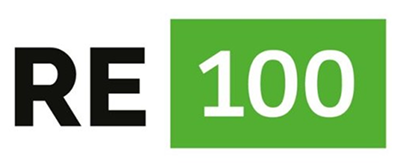
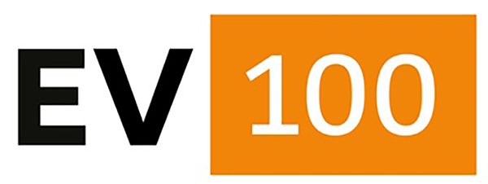

2030Complete RE100 / EV100 Transition
In April 2021, LG Energy Solution was the first global battery manufacturer to join both RE100 and EV100 and declare its commitment to transition electricity sourced in all of its business sites to 100% renewable energy and to transition all of owned and leased vehicles to electric vehicles by 2030.

&

With a view to accelerating the transition to renewable energy, LG Energy Solution makes efforts to secure stable supply of renewable energy, using varied measures catered to regulatory and power market conditions of each operating site – ranging from generating solar power from photovoltaic facilities installed in manufacturing plants, sourcing renewable energy through renewable energy certificates or green pricing, to exploring more stable and long-term measures such as power purchase agreement to contribute to additionality.
Additionally, we are transitioning corporate vehicle fleets to electric vehicles to achieve EV100, along with improving infrastructure, such as installing EV charging station at our operating sites.
We will continue to explore and find optimal measures to achieve carbon neutrality, taking into account national and local power market structures and cost effectiveness, to achieve both RE100 and EV100.